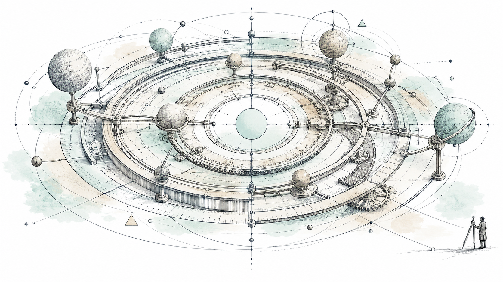
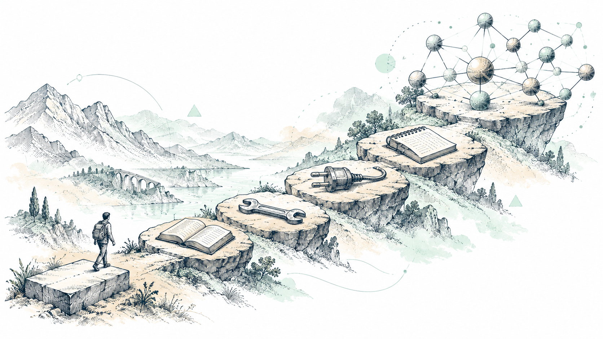
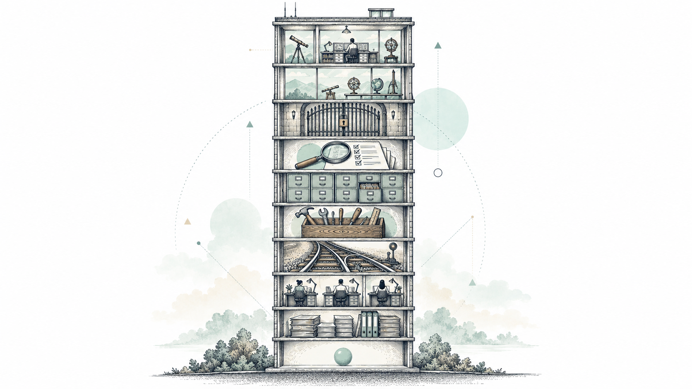
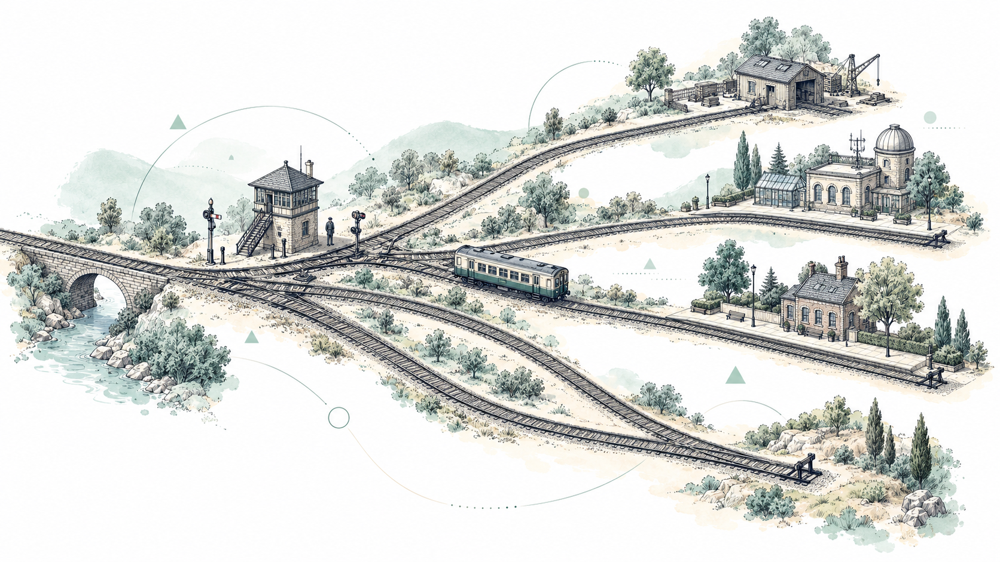
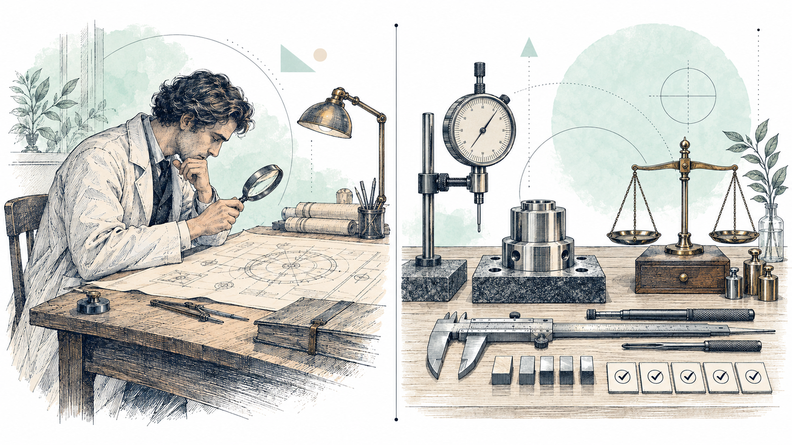
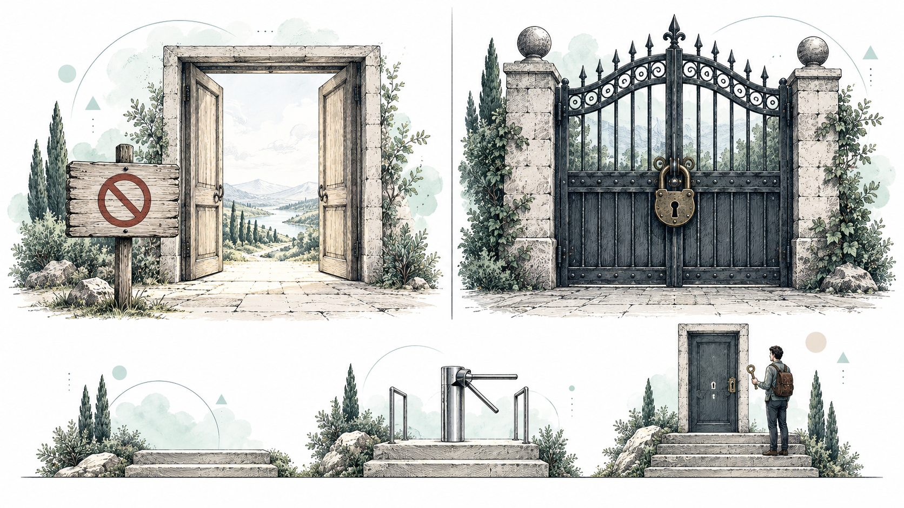
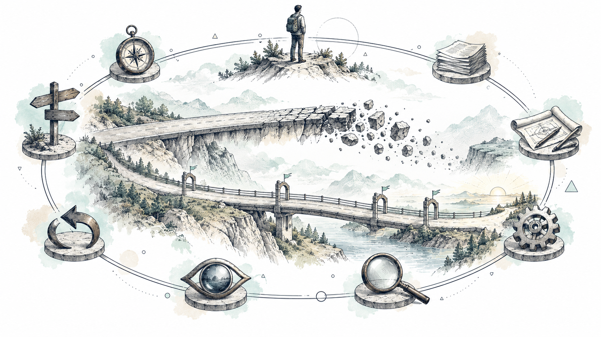
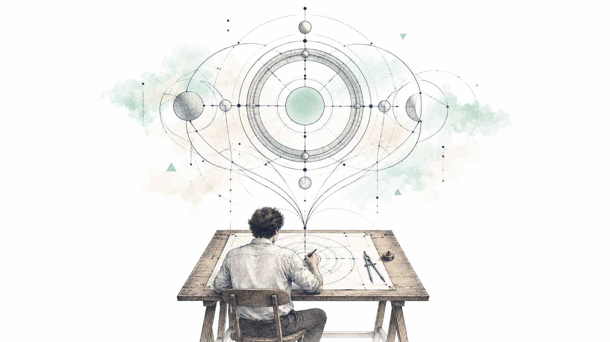

The architecture behind AI driven software development.

A system begins when many components operate under a controlled architecture.

Improving an AI application no longer necessarily means replacing the model with a more powerful one.

Personality is not architecture. Responsibility and authority are.

AI output should not automatically become truth.

Guardrails should not be reduced to instructions inside a prompt.

Speed without governance creates technical debt faster.

Access to powerful models is rapidly becoming commoditized.
